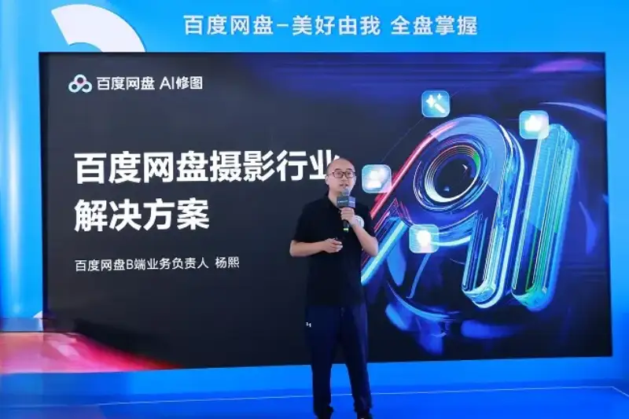
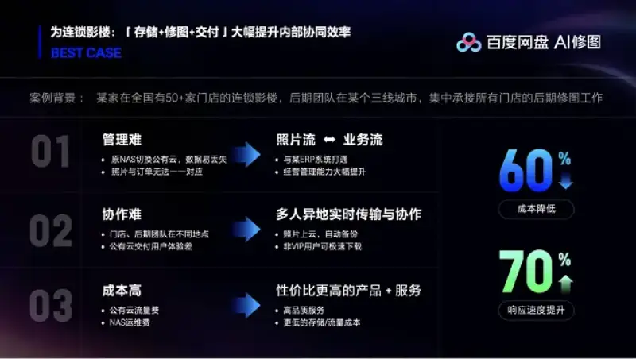
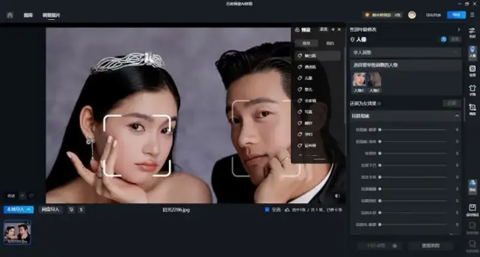
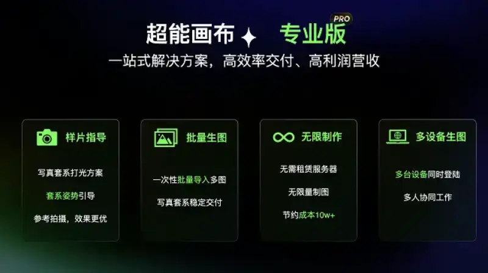

On August 7, the 2024 Shanghai International Visual Imaging Industry Expo opened. Baidu Netdisk released a new solution for the photo industry. Its new commercial-grade AI portrait product, Baidu Netdisk AI Retouch, can cut retouchers repetitive work by more than 70 percent. Its Super Canvas also upgraded to a Pro version, giving studios a one-stop industry solution and helping the industry cut costs and raise efficiency. With one-stop photo flow management of storage and backup, internal teamwork, AI retouch, and one-click delivery, Baidu Netdisk helps commercial photography make a leap in quality and efficiency.

From daily portraits to wedding photos, and from advertising to documentary work, demand in the photo market grows more varied. The industry is booming, and the market is expected to reach 687.634 billion yuan by 2027. Behind this strong demand, many studios face hard problems: hard management, low efficiency, and high costs. Cutting cost and raising efficiency is now the key focus of the industry.
Unlock a new model of smart commercial photography, with a smoother workflow
Pre-consultation, makeup and hair, shooting, retouching, selecting photos, fine retouching. A full photo workflow is long and complex. It hurts the client experience and puts heavy demands on the studio. Baidu Netdisk new photo solution works across the whole business flow, and uses strong AI products to support each step. A studio just picks the products that fit its needs, and solves its operating problems one by one to work better.
Take one chain studio. It has more than 50 stores nationwide, but its post-production team sits in one third-tier city and handles all retouching. Before, the studio found that the old model brought high management and operating costs, and the handoff was complex and slow, which hurt teamwork.
After adopting the Baidu Netdisk photo solution, the hard problems of management, efficiency, and cost were solved. First, photo storage is easier. Baidu Netdisk connects deeply to the studio ERP system, so uploaded photos link automatically to the order, and looking things up and managing them grows much simpler. Second, remote teamwork is faster. Photos sync to the cloud in real time, so remote staff can see the latest state and act on it. Third, operating costs fall. Compared with public cloud, Baidu Netdisk storage and traffic cost less, which eases cost pressure.
Data shows that after adopting the solution, the studio cut cost by 60 percent and raised response speed by 70 percent. In just one month, revenue rose 15 percent. In practice, it found a more tailored business path that makes the workflow smoother and the client experience better.

Baidu Netdisk AI Retouch: a smart retouch tool that cuts retouchers work by 70 percent or more
In traditional commercial photography, from shutter click to final image, the work passes through color grading, first pass, photo selection, and fine retouching. There is a lot of repeated detail to handle, plus many post changes to meet each client personal taste. The whole output flow is long and slow, and retouchers vary in skill, so results are uneven.
At this event, Baidu Netdisk launched the upgraded Baidu Netdisk AI Retouch 2.0 for commercial AI portrait work. It runs on the strong technology and algorithms of Baidu vision platform, the Cloud Engine. On one hand, the upgraded AI retouch has faster algorithms. Its ability to read and analyze portrait features is 30 times higher than before, and its retouch skill matches a pro retoucher with 5 to 10 years of experience. It cuts retouchers repetitive work by more than 70 percent. On the other hand, it offers finer, more professional beauty tools. It has high-low frequency skin smoothing, face reshaping that adjusts for aging, and teeth whitening. It can bring a portrait to its best state in one click, and greatly speed up post work.
Notably, Baidu Netdisk AI Retouch added a new feature, single-person adjustment and batch processing. In a group photo, you can click a face to switch fast to single-person retouch mode, and do deep custom fine work. After you finish one person, you can apply it in one click to other photos, which cuts repeated retouching and makes the work easier.

Baidu Netdisk Super Canvas: the Pro service is live, to generate creative works at very low cost, a tool to cut cost and raise efficiency
Super Canvas is an AI creative tool from Baidu Netdisk focused on portrait photography. It gives the industry a one-stop plan to cut cost and raise efficiency. Since it went live in April this year, Super Canvas has used Baidu Netdisk self-developed Photasy aesthetics large model, along with its own face generation control model, light-shadow blending, and detail enhancement. It achieves highly accurate face reproduction and builds a strong technical edge. The results are beautiful, accurate, and true. Using a data flywheel built from user feedback, the model keeps improving fast and the service quality rises.
At this expo, Super Canvas launched Super Canvas Pro, a tailored one-stop plan for professional clients: standalone sample guidance, unlimited batch creation, and multi-device login for teamwork. Whether you are an ordinary person with no shooting experience, or a professional studio, the Super Canvas one-stop tailored service can cut cost and raise efficiency in many ways.
On cost, Super Canvas Pro supports unlimited image generation, so professional clients have zero compute cost and save at least 100,000 yuan a year on machine cost. On speed, the Pro service supports batch work and can generate a whole set of styled images at once, raising retouch speed by 60 times. On custom needs, it supports creative customization, which raises a studio competitive edge, and saves about 150,000 yuan a year on portrait R and D.

Today, with leading AI vision technology and experience serving thousands of large clients, Baidu Netdisk has built a full system of client service, training, and consulting, to help studios grow as much as possible. Photographers, retouchers, and studio owners all benefit from the Baidu Netdisk photo solution. Going forward, Baidu Netdisk will keep helping the photo industry go smart. It will keep bringing easier, faster, more cost-effective tools and solutions, add strength to the industry, and open up wider possibilities.